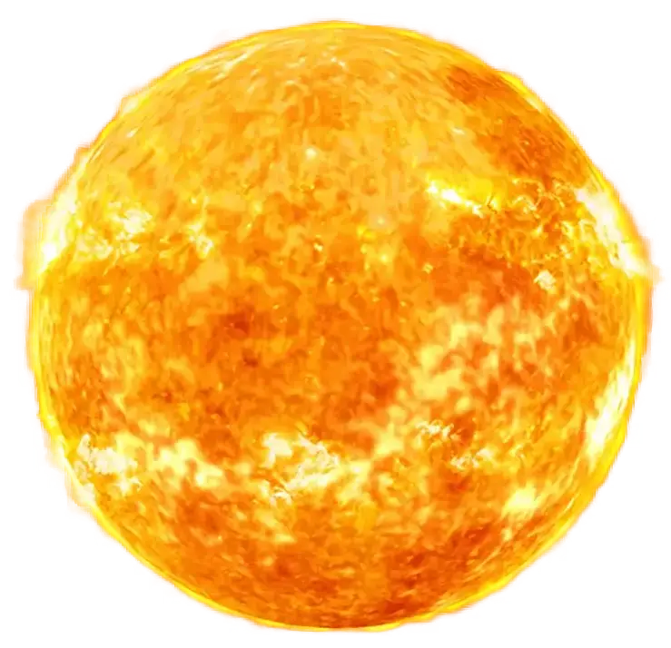
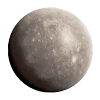
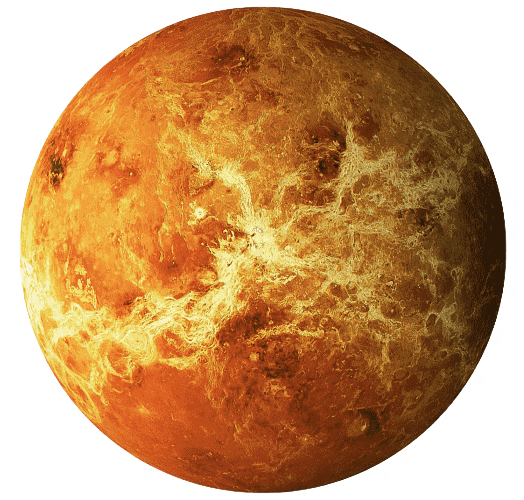
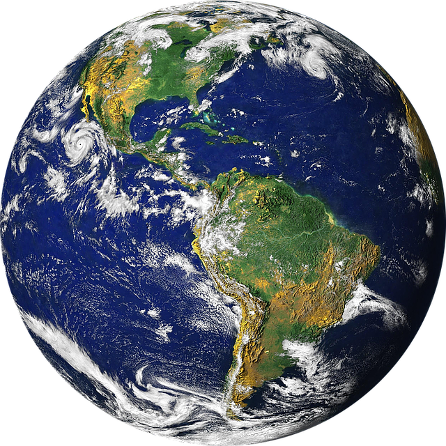
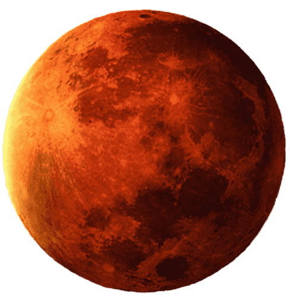
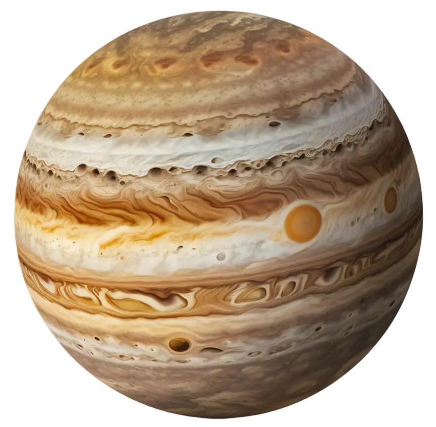
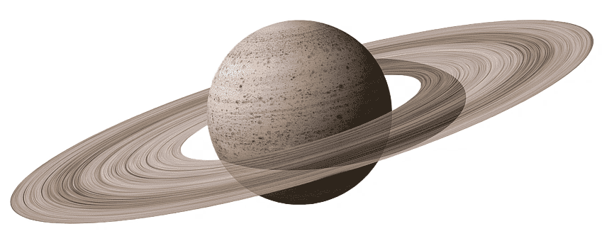
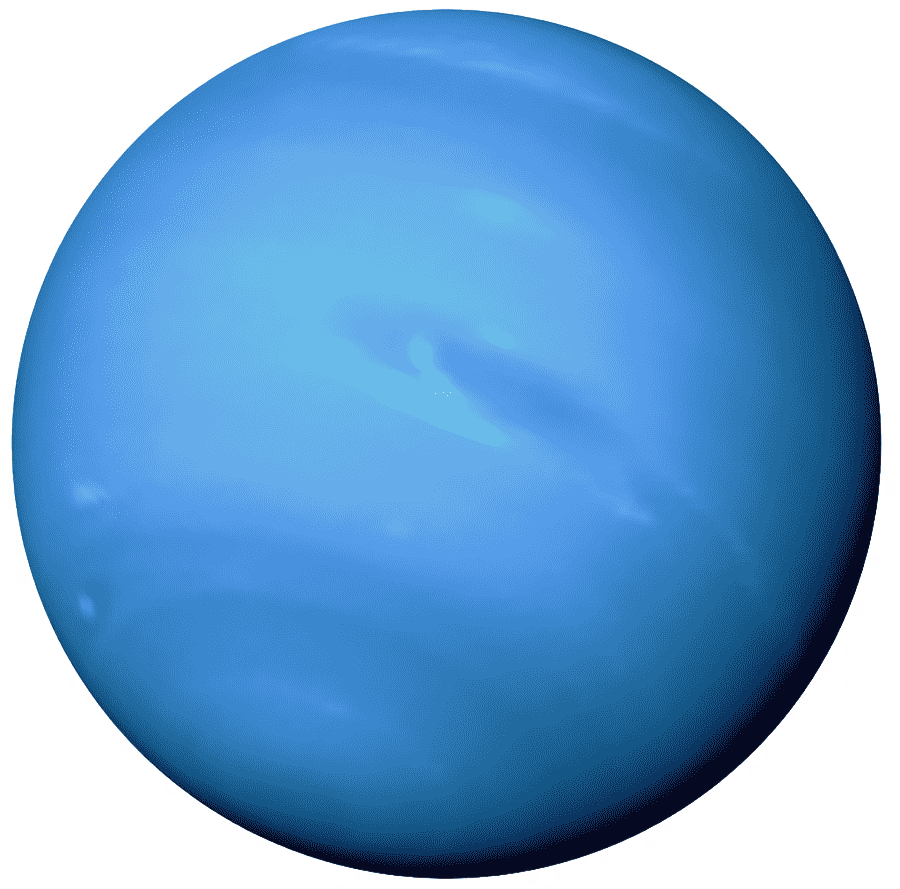
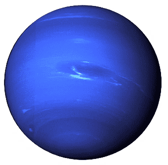

.png)
ASTRÔNOMOS
Nicolau Copérnico foi um astrônomo e matemático polonês que desenvolveu a teoria heliocêntrica do Sistema Solar. Foi também cónego da Igreja Católica, governador e administrador, jurista e médico.
Galileo di Vincenzo Bonaulti de Galilei, mais
conhecido como Galileu Galilei, foi um astrônomo,
físico e engenheiro florentino. Frequentemente é referenciado
como "pai da física moderna".
Isaac Newton foi um matemático, físico, astrônomo,
teólogo e autor inglês amplamente reconhecido como
um dos cientistas
mais influentes de todos os tempos
e como uma
figura-chave na Revolução Científica.
SISTEMA SOLAR
SOL
É a maior estrela do sistema
solar e está a
mais de 150
milhões de quilômetros da
Terra.
Mercúrio é o
mais rápido, o
mais próximo
do sol e o
menor plane-
ta do sistema
solar.

Mercúrio
Vênus
Vênus é o
segundo
do nosso
sistema
solar a partir
do Sol e o
mais próxi-
mo da Terra
O terceiro planeta
mais próximo do
Sol, o mais den-
so
e o quinto
maior dos oito
planetas do
Sistema Solar.

Terra
Marte
Também cha-
mado de Pla-
neta Verme-
lho, é o quar-
to planeta
do
Sistema Solar,
ficando entre a
Terra e Júpiter.
É o maior planeta
do Sistema Solar,
tanto em diâmetro
quanto em massa,
e é o quinto mais
próximo do Sol.

Jùpiter
Saturno
Saturno é o sexto planeta a partir
do Sol e o segundo maior
do
Sistema Solar atrás de Júpiter.
Seus anéis são formados
por
partículas e fragmentos maio-
res de rocha e gelo.
é o sétimo pla-
neta a partir do
Sol, o terceiro
maior e o mais
frio dos oito
planetas do
Sistema Solar.

Urano
Netuno
 é o oitavo e
mais distante
planeta do
Sistema Solar,
pertencente ao
grupo dos gigan-
tes gasosos.
CONSTELAÇÕES
")
")
")
")
OBA
OBA - 2024
OBA - 2023
OBA - 2022